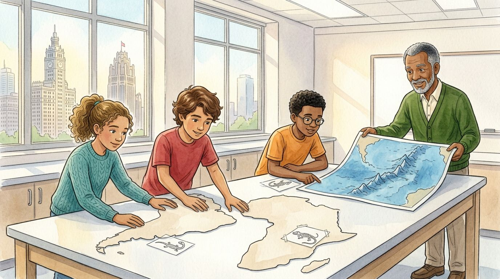

Grade 7 · Science · MS-ESS2-3
The puzzle of the continents
A story about a scientist who said the continents move, the evidence he found, and the map of the ocean floor that finally proved him right.
El rompecabezas de los continentes. Un cuento sobre un científico que dijo que los continentes se mueven, las pruebas que encontró y el mapa del fondo del océano que al fin le dio la razón.
Science words you will learn
Tap a green word to see what it means.
Toca una palabra verde para ver qué significa. Con la ayuda activada, verás también la definición en español.
The story
El cuento está en inglés. Pulsa «Listen to the story» para escucharlo y toca las palabras verdes cuando no entiendas una.
Mr. Mensah handed out paper cutouts of the . "Try to fit them together," he said. Athena and Elías pushed South America toward Africa, and the bulge of Brazil slid into the curve of West Africa like two puzzle pieces. "Whoa," said Elías. "Is that a coincidence?"
"A German scientist named Alfred Wegener didn't think so," said Mr. Mensah. "In 1912, he said that long ago all the continents were joined in one giant supercontinent. He called it , which means all lands. Over millions of years, he said, the pieces drifted apart."
"A good fit isn't enough to prove it," said Daniel. "Exactly," said Mr. Mensah. "Wegener needed , so he looked for clues." He taped two drawings of the same small reptile on the cutouts. "Fossils of this freshwater reptile, Mesosaurus, are found in South America and in Africa, and nowhere else. It could not have swum across a whole salty ocean."
He showed them more clues. Rocks of the same age and type line up on both sides of the Atlantic, and the old mountains in the eastern United States match mountains in Scotland and Norway, as if one mountain chain had been torn apart. "So the fossils, the rocks and the shapes all tell the same story," said Athena.
"Then everybody believed him?" asked Elías. Mr. Mensah shook his head. "Most scientists laughed. Wegener couldn't explain what force could push whole continents. He kept collecting evidence, and he died on an expedition across the ice of Greenland in 1930, still believing he was right."
Then he unrolled a big blue map. "In the 1950s, a scientist named Marie Tharp drew the first detailed maps of the ocean floor, using measurements taken from ships." "She found a huge chain of underwater mountains running down the middle of the Atlantic, with a deep valley in its center: the . New rock comes up there, and the ocean floor spreads apart on both sides."
"That was the missing piece," said Mr. Mensah. "Scientists put all the evidence together into the theory of : Earth's outer layer is broken into huge that move, carrying the continents and the ocean floor with them." "How fast?" asked Daniel. "A few centimeters a year, about as fast as your fingernails grow. The Atlantic is still getting wider."
Elías looked at the two paper continents. "So right now, Chicago is moving," he said. "Very, very slowly," said Mr. Mensah. Athena wrote in her notebook: Wegener was right about the drift and wrong about the push. Science needed both his idea and Marie Tharp's map.
Glossary
- continent
- One of the seven very large areas of land on Earth, like Africa or South America.
- continente: Una de las siete grandes extensiones de tierra del planeta, como África o América del Sur.
- Pangaea
- The name Wegener gave to the giant supercontinent that included all the continents joined together long ago.
- Pangea: El nombre que dio Wegener al gran supercontinente que reunía todos los continentes hace mucho tiempo.
- evidence
- Facts or observations that help show whether an idea is true.
- evidencia: Hechos u observaciones que ayudan a demostrar si una idea es verdadera.
- plate
- A huge slab of Earth's outer layer. Continents and ocean floors ride on plates that move very slowly.
- placa: Un enorme bloque de la capa exterior de la Tierra. Los continentes y los fondos marinos van sobre placas que se mueven muy despacio.
- mid-ocean ridge
- A long chain of underwater mountains where new ocean floor forms and plates move apart.
- dorsal oceánica: Una larga cadena de montañas submarinas donde se forma fondo oceánico nuevo y las placas se separan.
- plate tectonics
- The scientific theory that Earth's outer layer is made of moving plates that shape continents, mountains and oceans.
- tectónica de placas: La teoría científica según la cual la capa exterior de la Tierra está formada por placas que se mueven y dan forma a continentes, montañas y océanos.
Questions
Choose the correct answer. If you make a mistake, the story shows you where the answer is.
Elige la respuesta correcta. Si te equivocas, el cuento te muestra dónde está la respuesta.
-
Question A. What was Wegener's big idea in 1912?
¿Cuál fue la gran idea de Wegener en 1912?
Wegener said that all the continents were once joined in Pangaea and drifted apart over millions of years.
-
Question B. Why are the Mesosaurus fossils good evidence?
¿Por qué son buena evidencia los fósiles de Mesosaurus?
Mesosaurus lived in fresh water and could not have swum across the ocean, yet its fossils are in South America and Africa.
-
Question C. What do the rocks and old mountains show?
¿Qué muestran las rocas y las montañas antiguas?
Rocks of the same age and type, and old mountain chains, line up on both sides of the Atlantic.
-
Question D. What did Marie Tharp find on the ocean floor?
¿Qué encontró Marie Tharp en el fondo del océano?
She found the mid-ocean ridge, where new rock comes up and the ocean floor spreads apart.
-
Question E. What does the theory of plate tectonics say?
¿Qué dice la teoría de la tectónica de placas?
Earth's outer layer is broken into huge plates that move, carrying the continents and the ocean floor.
Challenge: explain your thinking
Weigh the evidence
Wegener had three kinds of evidence, but most scientists still rejected his idea. Name his three kinds of evidence. Then explain what was missing, and what new evidence finally convinced scientists.
Pesa la evidencia. Wegener tenía tres tipos de evidencia, pero la mayoría de los científicos rechazó su idea. Nombra sus tres tipos de evidencia. Después explica qué faltaba y qué nueva evidencia convenció por fin a los científicos.
Answer in your notebook or talk it over with a classmate. Use evidence from the story.
Responde en tu cuaderno o coméntalo con un compañero. Usa evidencia del cuento.
Check your thinking
His evidence: the shapes of the continents fit together, the same fossils (like Mesosaurus) are found on continents now far apart, and matching rocks and mountains line up across the Atlantic. What was missing was an explanation of how the continents could move. Marie Tharp's maps of the ocean floor showed the mid-ocean ridge, where new floor forms and spreads apart, and that led to the theory of plate tectonics.